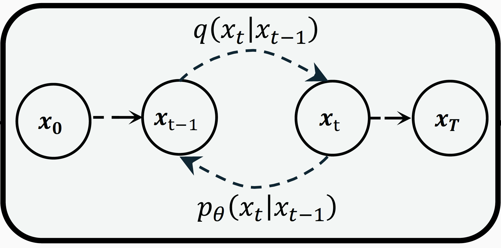

Under review · NeurIPS 2026
Clean-Label Backdoor Attacks for Diffusion Models
A meta-learning framework that shapes the poisoned inputs so that standard diffusion training still learns accurate score estimates on them, instead of denoising the trigger away — raising poisoning success by roughly 20% over small-perturbation baselines.